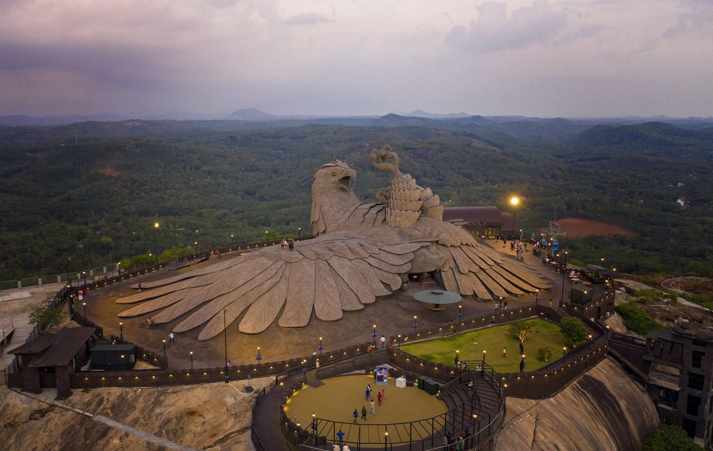
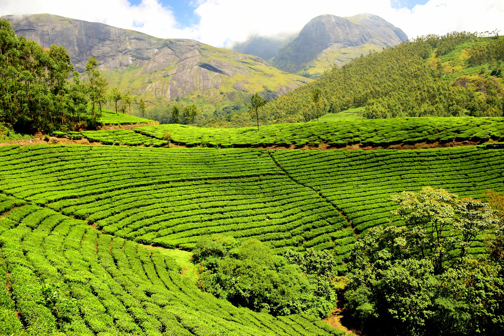

Alleppey
Backwaters

Jatayu Earth's Center

Parambikulam Tiger Reserve
Rameshwaram
Munnar

Nelliyampathy

Tea Garden
Nicknamed the "sunshine state" for its year-round warm weather, Goa is home to India's top beaches, fringed by palms and stretching for miles along the Arabian Sea. Each beach has its own vibe, from backpacker hangouts to wellness-focused yoga retreats. If you're looking for an upbeat scene, beaches like Anjuna, Baga, and Calangute offer water sports like surfing and parasailing, as well as live music on the sands after sunset. You can unwind or keep the party going at beach shacks, where bars serve ice-cold beer and restaurants dish up seafood like prawn tempura and tuna tartare.
The Kuruva island is near River Kabini in Wayanad and is an unhabited island of ever green forest on the tributaries of east flowing river, far away from the disturbances of city life. Rare species of birds, orchids and herbs are the sovereigns of this supernal kingdom. It is an ideal picnic spot and is 17kilometers east of Mananathavady and 40kms northwest of Sulthan Bathery. The sprawling 950 acres of the protected river delta, Kuruva Dweep is a must-visit ecotourism spot in Kerala. This untampered heaven is set right in the middle of the Kabini river and has the most beautiful surroundings imaginable, making it a perfect picnic spot for you and your loved ones far away from city pollution. Among the many things that Kuruva offers, its bamboo raft rides and treks are the most exciting. Trekkers who come here often find themselves smitten by its serene environment and exotic species of animals, plants, and birds. Thenmala attracts foreign and domestic tourists with a host of attractions including boating on the lake, a rope bridge, trekking, mountaineering, biking and a musical fountain. Thenmala is approachable both from Trivandrum and Punalur by road. The nearest railway station is Punalur. Kollam-QLN is better connected nationally. The waterfall called Palaruvi is a prime attraction nearby. Also nearby is a deer rehabilitation center where visitors can see deer in a forest setting and have a peep into a traditional tree house used by forest dwellers to escape harm from wild animals.
Silent Valley National Park is a beautiful representation of the last remaining rain forest of Kerala. Historically it’s a paradigm of people’s movement to protect the forest. Silent Valley was declared as National Park in 1984 and formally inaugurated in the year 1985. Initially there was only 89.52 sq.km. area under the Division which forms the core zone of the National Park. In 2007, an area of 148 sq.km. was added to this Division as buffer zone. In 1914, Silent Valley forests were declared as Reserved Forest. Till 1921, Silent Valley was part of South Malabar Forest Division with headquarters at Nilambur. During 1921, it came under control of Palakkad Forest Division and managed so until 1988.It is located in the rich biodiversity of Nilgiri Biosphere Reserve. Karimpuzha Wildlife Sanctuary, New Amarambalam Reserved Forest, and Nedumkayam Rainforest in Nilambur Taluk of Malappuram district, Attappadi Reserved Forest in Mannarkkad Taluk of Palakkad district, and Mukurthi National Park of Nilgiris district, are located around Silent Valley National Park. Mukurthi peak, the fifth-highest peak in South India, and Anginda peak are also located in its vicinity. Bhavani River, a tributary of Kaveri River, and Kunthipuzha River, a tributary of Bharathappuzha river, originate in the vicinity of Silent Valley. The Kadalundi River has also its origin in Silent Valley.
Some notable tourist attractions located in Ponmudi are Peppara Wildlife Sanctuary, Echo Point and various trekking spots. Mist-laden valleys, especially Golden Valley near Kallar River, also draw tourists. Travelers can find a deer park and wood and stone cottages coloured in bright hues. Located about 1.5 km from the hill station, is the Ponmudi Falls. Around 3 km from the Ponmudi Resort, is the Deer Park. The Meenmutty Falls, another tourist attraction of the region, is about 3 km from the Kallar Main Road. Peppara Wildlife Sanctuary, located on the outskirts of Ponmudi, is a preserve spread across 53 km2 (20 sq mi) and accommodates a variety of wild animals and birds like Asian elephants, sambar, leopards, lion-tailed macaques, Malabar grey hornbills, etc.
There is also another belief that it was originally built by Kolathiri Rajas and later captured by Sivappa Naik. The fort was occupied by Hyder Ali of Mysore in 1763 A.D and then the Huzur of Canara during Tipu Sultan's reign and later by the British. During the British rule, the erstwhile Bekal taluk was part of South Canara district and encompassed the present Kasaragod and Hosdurg taluks. The fort with its zigzag entrance, strategically designed openings on the outer walls for defense and trenches around, has no palaces inside and was probably build just for Defence purposes. The sea bastion, underground tunnels and the observation tower in the fort are impressive. The Bekal Fort has been a source of attraction for historians, tourists and nature - lovers for centuries since it embodies memories of a glorious past. Just outside the fort there is a mosque built by Tippu Sultan of Mysore. At the entrance is the Anjaneya temple, dedicated to Sree Hanuman. Said to be as old as the fort itself, the shrine was recently renovated and attracts hundreds of devotees from far and near.